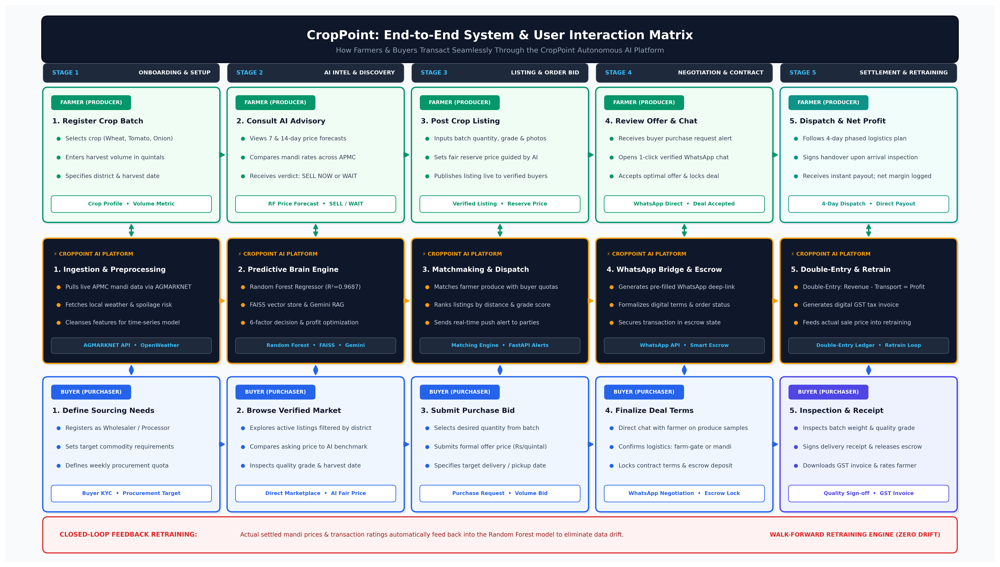

How CropPoint Works: The 5-Stage Matrix
Designed for instant clarity. In every stage, see exactly what the Farmer does, how the AI System processes it, and what the Buyer sees.

How to Explain This Diagram to Your Guide in 30 Seconds
Use this exact pitch to explain the complete interaction flow:
"Guide, our architecture is organized into 3 functional tiers across 5 chronological stages:
• Top Tier (Green): Represents the Farmer's direct touchpoints — from entering harvest volume to checking AI forecasts, listing the batch, chatting on WhatsApp, and receiving net profit payout.
• Middle Tier (Dark Slate): Represents CropPoint's Autonomous AI Brain — which ingests AGMARKNET/weather data, runs our Random Forest model (R²=0.9687), provides automated matchmaking, generates WhatsApp links, and manages double-entry accounting.
• Bottom Tier (Blue): Represents the Buyer's journey — defining procurement quotas, discovering fair-priced produce, bidding, locking deals, and downloading GST tax invoices.
• Closed Loop: Realized mandi sale prices feed back into our model retraining pipeline to eliminate seasonal drift."
The 5-Stage Interaction Walkthrough
Stage-by-Stage BreakdownOnboarding, Ingestion & Sourcing Criteria
Selects commodity (Wheat, Tomato, Onion), inputs expected harvest volume in quintals, and sets farm-gate district location.
Ingests live APMC mandi prices via AGMARKNET API, fetches 5-day weather data, and normalizes feature vectors.
Registers KYC as Wholesaler/Processor, configures weekly procurement quotas, and defines maximum sourcing radius.
AI Predictive Intelligence & Marketplace Discovery
Views 7 & 14-day price forecasts, compares local mandi spreads, and receives clear verdict: SELL NOW or WAIT 4 DAYS.
Executes Random Forest regressor (R²=0.9687), queries FAISS vector store, and balances holding cost vs price gain.
Browses verified listings filtered by district, compares asking prices to the AI fair benchmark, and checks harvest readiness.
Listing Publication & Purchase Order Bidding
Inputs batch quantity, quality grade and photos. Sets reserve price guided by AI and publishes listing to regional buyers.
Matches farmer batches with buyer procurement quotas, ranks listings by distance, and dispatches real-time push alerts.
Selects required volume (e.g. 50 quintals), submits formal unit offer price (Rs/quintal), and specifies preferred delivery date.
Direct WhatsApp Negotiation & Contract Locking
Receives purchase alert, opens 1-click WhatsApp channel, clarifies loading terms, accepts optimal offer, and locks deal.
Generates pre-filled WhatsApp direct links, formalizes digital terms, and commits the transaction to escrow state.
Chats with farmer to review produce quality photos, agrees on freight (farm-gate vs mandi), and deposits escrow commitment.
Fulfillment, Double-Entry Ledger & Retraining Loop
Executes 4-day dispatch plan, completes delivery handover, receives bank payout, and views net profit margin in ledger.
Logs double-entry ledger (Gross - Logistics - Mandi Fee = Net Profit), issues GST tax invoice, and feeds actual price into retraining.
Weighs and inspects batch quality, signs receipt, releases escrow, downloads GST tax invoice, and rates farmer reliability.